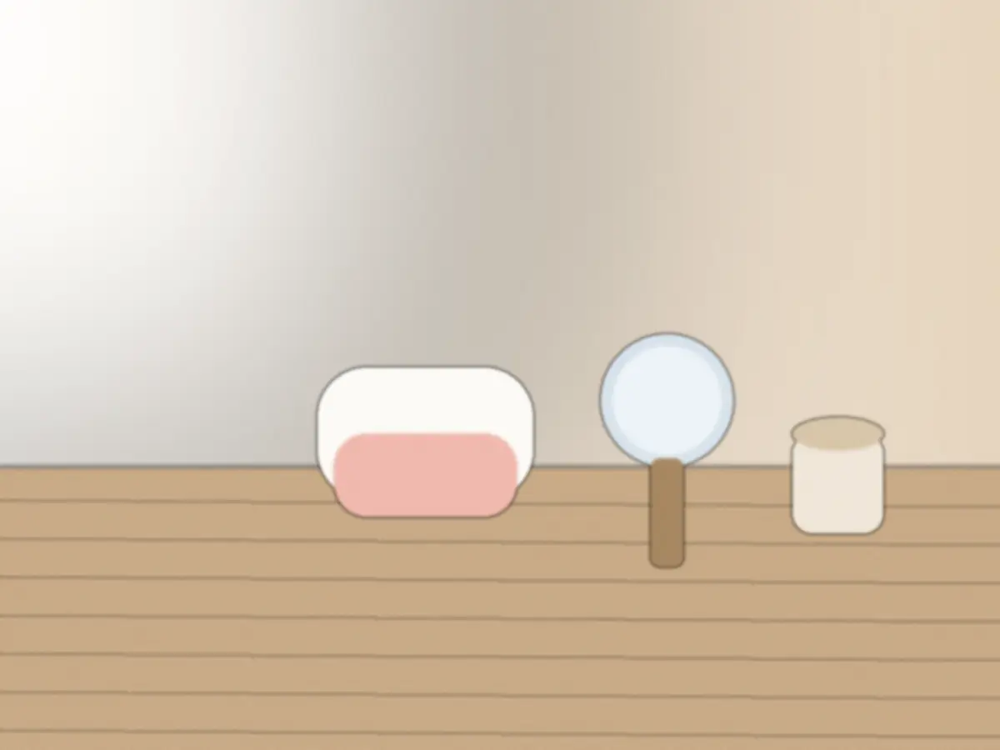
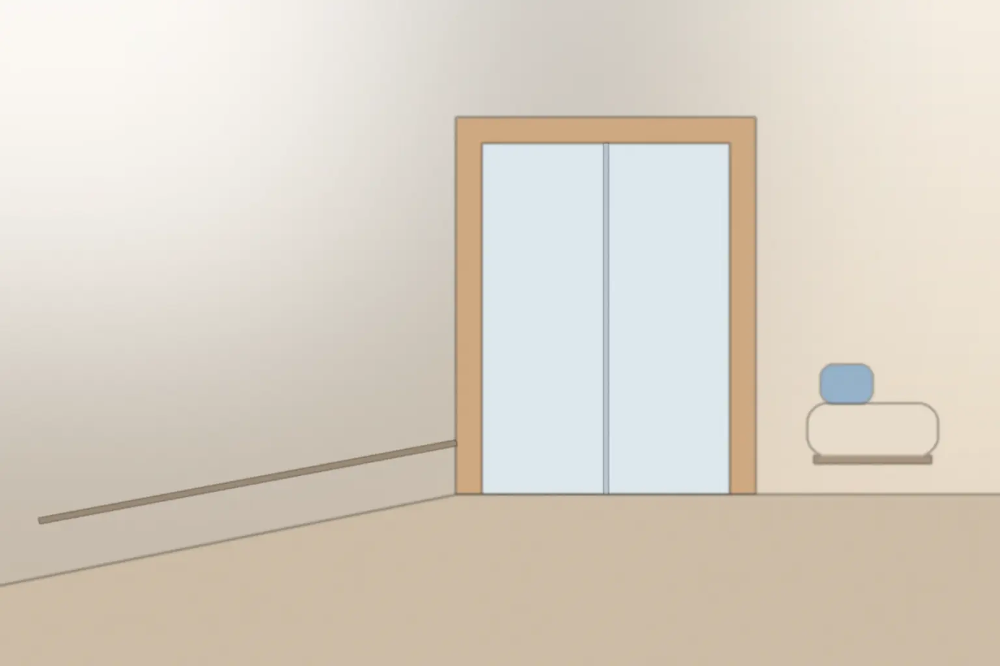

申し込み方は2つです。
電話
番号【要確認】
診療時間内に受け付けます。その場で空いている時間をお伝えします。
このページの入力欄
24時間
希望の曜日と時間帯を送ると、医院から日時を連絡します。返信の目安【要確認】
予約の希望を書く
必須の欄だけで送れます。
日時は医院から連絡して決めます。
予約の前に、よくある質問
予約
予約の変更や取り消しは、どうすればいいですか
診療時間内にお電話ください。何日前までに連絡すればよいかは【要確認】です。
問診
初めての日は、何を持っていけばいいですか
保険証かマイナ保険証と、お薬手帳です。お子さまの医療費の助成は自治体ごとに違うため、医療証の要否は受付でお尋ねください。
歯医者がこわくて、10年以上行っていません
最初の10分は、お話だけの時間です。こわいことや苦手な音を先に伺い、検査の前にお伝えします。入力欄の「気になること・こわいこと」に書いておくこともできます。
説明
自費の治療をすすめられませんか
保険でできる方法を基本にご説明し、自費の方法があるときは並べてお見せします。おすすめの順をつけることはせず、選ぶのはご本人です。
説明を聞いたその日に、決めないといけませんか
決めるのは後日でかまいません。紙を持ち帰って、ご家族と相談してからお返事ください。
治療
初めての日に、削ったり抜いたりしますか
初めての日は、お話・検査・説明が中心です。急な痛みや腫れがあるときは、応急の処置をすることがあります。その場合も、先に理由をお伝えしてから始めます。
矯正やインプラントもできますか
どちらも行っていません。必要なときは、専門の医院をご紹介します。
